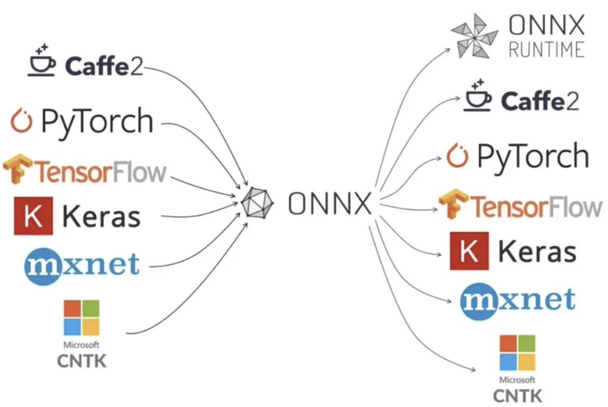
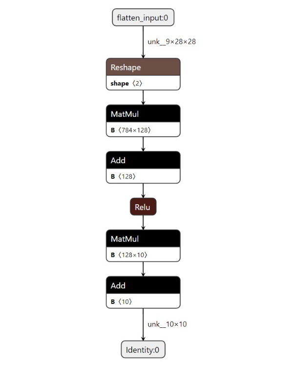
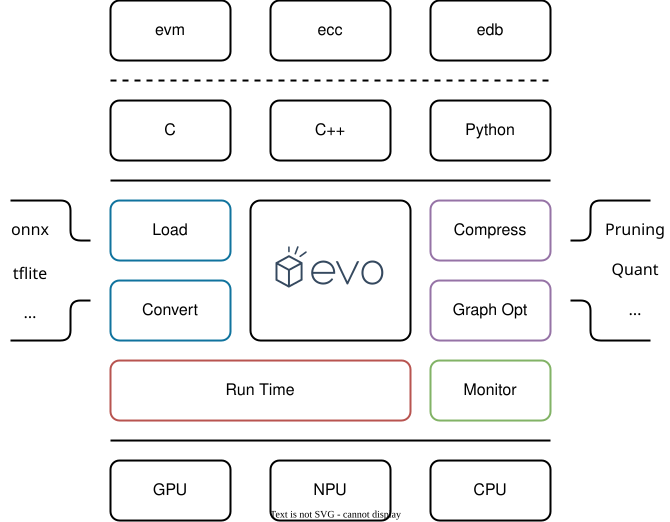

01 TinyML 推理引擎概述
作者：鲁天硕
时间：2024/7/15

1.1 推理引擎架构
当前主流推理引擎框架都采用分层式设计，主要包含静态侧和动态侧两部分功能： 1. 静态侧：模型转换、静态模型压缩、静态图优化 ... 2. 动态侧：模型加载、运行时量化、异构执行 ...

1.2 主流推理引擎
| Item | Type | Lang | Company | Platform |
|---|---|---|---|---|
| TinyMaix | Infer | C | Sipeed | MCU |
| ORT | Infer | C++ | Microsoft | PC, Server |
| microTVM | Infer | C++ | Apache | Paper |
| TFLM | Infer | C++ | MCU | |
| NCNN | Infer | C/C++ | Tencent | Phone |
| CoreML | Train & Infer | Swift | Apple | IPhone |
| MNN | Train & Infer | C++ | Alibaba | Phone |
| MindSpore | Train & Infer | C++/Python | HuaWei? | All? |
1.2 主流推理引擎

2.1 端侧部署难点
指标：性能、易用、兼容、轻量
难点：
1. 模型兼容性与内存占用：读入模型支持.onnx来提升框架兼容性，将读入后的模型压缩为自定义的运行时模型，降低运行时内存开销（使用flatbuffer）；
2. 动态静态图优化：主要性能瓶颈在于运行时内存与数据IO，对于TinyML的场景需要做专项的量化、调度方案；
3. 异构执行与内联汇编：选取热点算子进行内联汇编优化，支持硬件汇编指令，提升推理速度；
4. 计算加载与卸载：需要搭建模型数据库，针对模型选取推理网络类型（边缘独立推理、边缘集群推理、云边协同推理），在指定网络下，尽量降低推理时延和内存占用；
2.2 常用模型格式
- ONNX(Open Neural Network Exchange): 使用
ProtoBuf进行序列化的二进制模型文件格式，十分通用，主流框架（如：Pytorch, TensorFlow）对该格式导出都有相关支持。 - tflite 是 TensorFlow Lite 的模型文件格式，使用
FlatBuffer进行序列化，较为轻量级，适用于移动端设备。

2.3 模型序列化
| ProtoBuffer | FlatBuffer | |
|---|---|---|
| Lang | C/C++, C#, Go, Java, Python, Ruby, Objective-C, Dart | C/C++, C#, Java, Lua, Python, Rust ... |
| Version | 2.x / 3.x | 1.x |
| File | .proto |
.fbs |
| Type | More | Base |
| Model | .onnx |
.tflite |
| Load | Normal | Fast |
| Size | Normal | Small |
2.4 模型可视化
- 模型可视化，通过
netron插件可以可视化模型文件，从而观察算子和张量形状：

3.1 框架初探
- 采用分层式模块架构：
- 上层提供多种编程语言的开发模块
- 核心提供模型的转换、压缩以及运行时
- 下层对Host端设备进行算子调度
- 关键词: Lite > High Performance > Easy to Use > Compatibility

3.2 软硬件协同设计
使用DiffTest进行交叉验证与性能测试:
1. Server: Trace operators' runtime. Send/receive result tensor_data/operator_asm/perfermance_data
2. Client: Difftest and cross-valid run result
3.3 后续实验
- 实验环境：PC端（Linux + x86_64）、MCU端（PynqZ2 + Arm）
- 实验目标：测试各个推理引擎（主要：
TinyMaix,TFLM,ORT,microTVM）在边缘侧推理的指标 - 实验指标：性能（内存占用，推理时间）、易用性（评估部署时间）、兼容性（多平台部署）
- 实验数据：收集常用边缘侧DL模型（格式：
.onnx,.tflite）、MLPerf测试 - 后续分析：提取热点算子进行软件侧实现